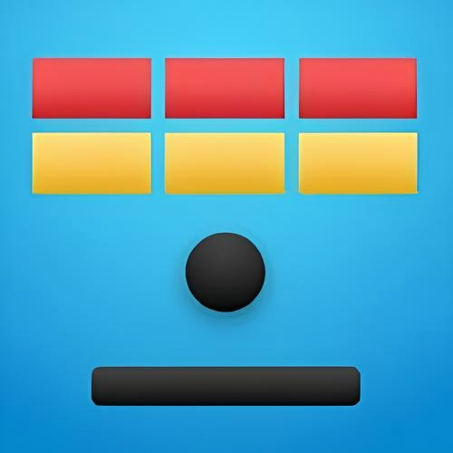
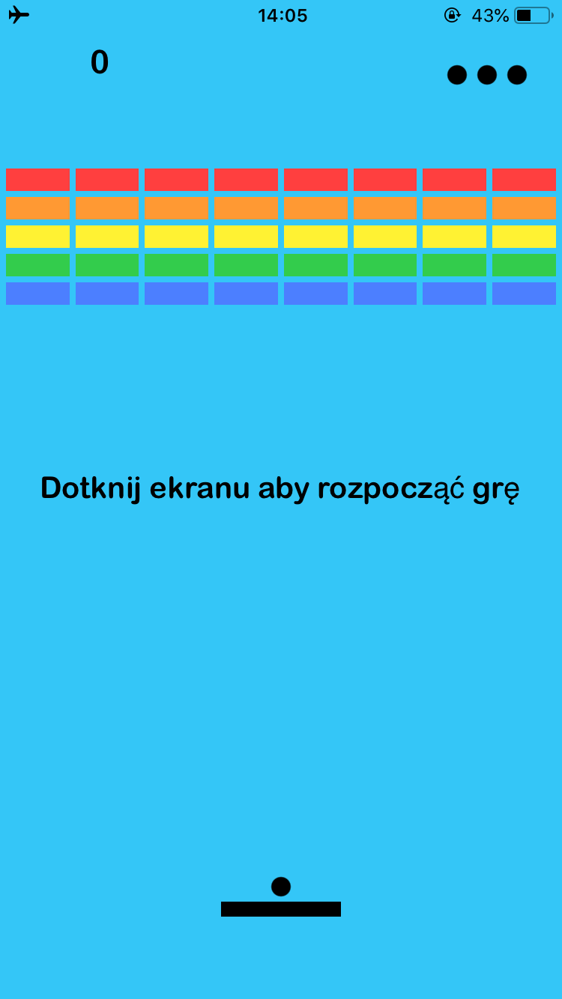
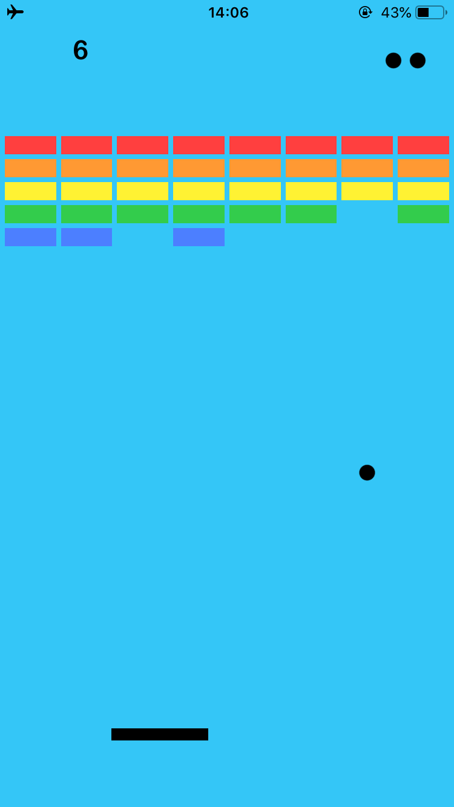
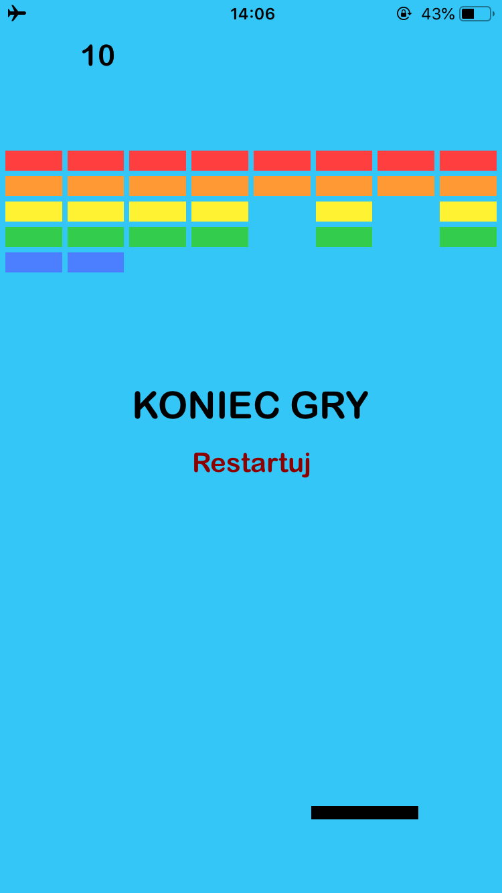
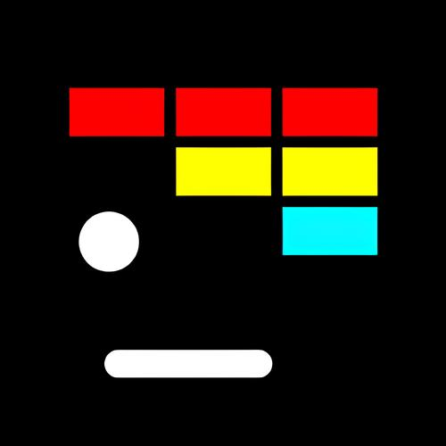
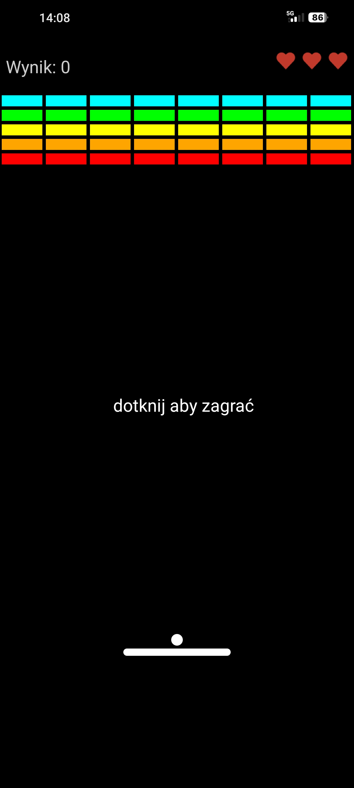
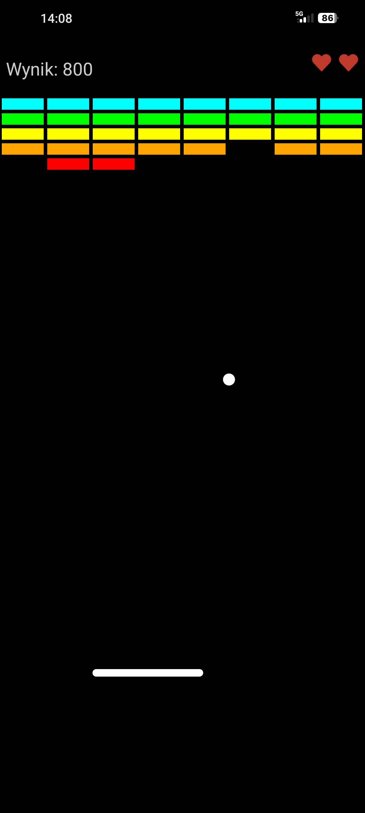
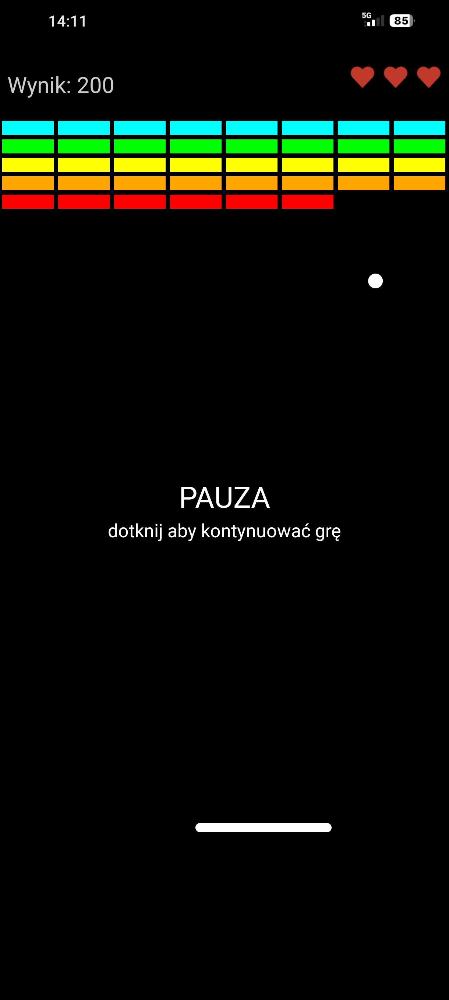

These are my first applications, they are not perfect.
They were created a long time ago as a fun experiment.
To moje pierwsze aplikacje, więc nie są idealne.
Zostały stworzone dawno temu jako ciekawy eksperyment.

Developed on macOS Monterey via VMware as an experiment. The game features sound effects, but does not have a pause function.
Napisana na macOS Monterey w VMware jako eksperyment. Gra posiada efekty dźwiękowe, ale nie ma funkcji pauzy.
Note: Requires sideloading (e.g. AltStore/Sideloadly) to install.
Uwaga: Instalacja wymaga narzędzi do sideloadingu (np. AltStore/Sideloadly).




Built in Android Studio (Debug). Features sound effects and a pause function. Game speed scales with screen refresh rate (runs well at 120Hz, slightly slower at 60Hz or battery saver mode).
Napisana w Android Studio (wersja Debug). Posiada efekty dźwiękowe i funkcję pauzy. Szybkość gry zależy od odświeżania ekranu (poprawnie przy 120Hz, nieco wolniej przy 60Hz lub w trybie oszczędzania baterii).


